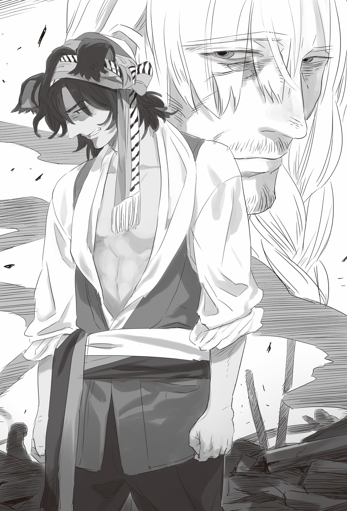
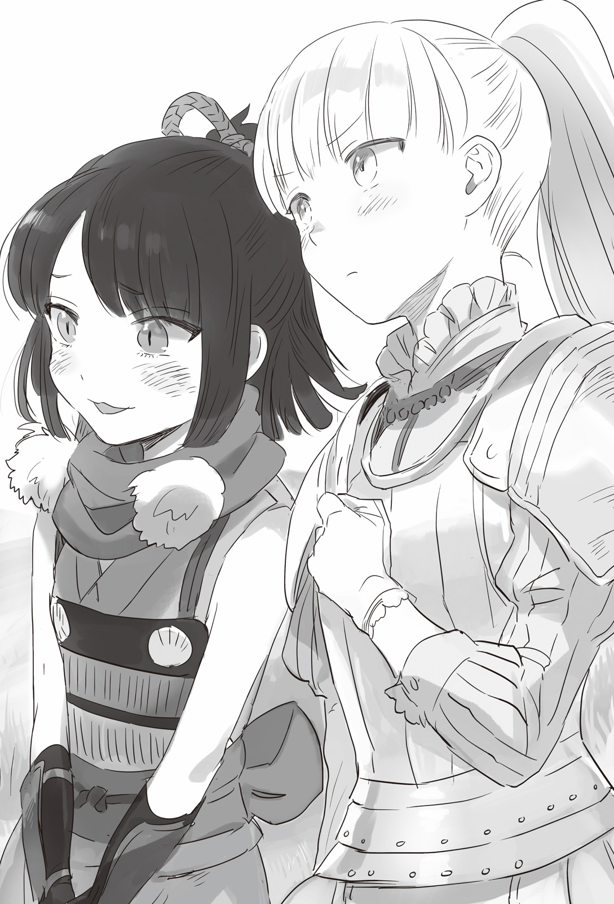
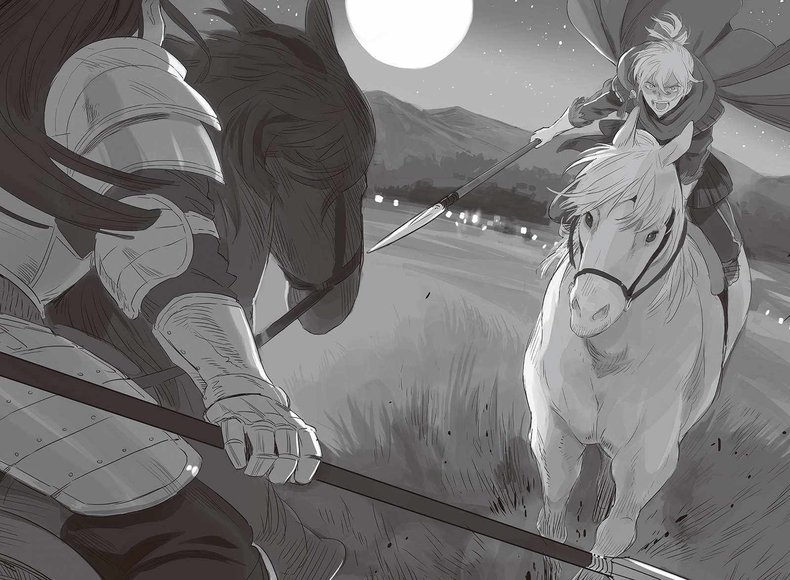

Chapter 4 – Deathly Battle of Moonlit Night
.
Part 1
「Ferocious warriors who shoulder the future of dukedom!」
At the Camponogara Plain that was located at the outskirt of the capital Millianna.
Because the plain was also used for the army’s training ground, this vast plain was left untouched without being used as farmland. A crowd of people that reached the number of eighty thousand was lined up orderly there.
With the royal court magician using wind magic to magnify the sound, the archduke of Trystovy Kingdom, Jack Armadio Trystovy clenched his fist and spoke fercently.
「Right now, an usurper who has the blood of beastman flowing within his body is baring his fang to take away our homeland. The only one who can put a stop to that is none other than the great effort of all of you gentlemen the heroes who will fight in the defense of our country!」
The commanders thrust up their arm in respond to the archduke’s words. When they loudly raised a war cry 「Ou」, the soldiers also followed after them.
「OU!」
「OU!」
The voice of 80000 soldiers literally shook the ground. Jack calmly waited for a while until this very loud sound that made the ears hurt stopped.
It seemed there was no problem with the morale for now.
Setting aside the knights, many of the soldiers were commoners. It was a worrying factor. The life or death of the dukedom would be affected if they rebelled in a bad timing.
It was Valerie who saved Jack from his distress.
It was none other than Valerie’s counsel that made Jack approved the massacre of the commoners and the dispatch of troops this time.
「Are we going to hand over this Trystovy that has a long history behind it to the hand of a beastman? Try imagining it. Imagine those smelly animals ruling over all of you gentlemen, imagine entrusting the future of this nation to them, that is something that must never be allowed to happen at all cost! Isn’t that right?」
「That’s right!」
「Never hand this country to the beastman!」
「Dukedom banzai!」
「Dukedom banzai!」
Certainly the commoner soldiers harbored severe worry toward the tyranny of the nobles.
At the same time they certainly also harbored a strong prejudice toward beastman. It became even more acute when they imagined that a beastman would rule over Trystovy in the future.
There wasn’t any guarantee anywhere that a beastman’s rule would be any better than noble. So far the rumor from the south that Baldr was kind toward the commoners had only just begun circulating.
Although sooner or later the information about the condition of the kingdom that Baldr was ruling would be circulated as fact. So it wouldn’t be strange if the commoners changed their attitude anytime once it happened.
That was why a spectacular move was needed so the commoners wouldn’t turn their back on the dukedom that easily.
Valerie felt Jack’s gaze on him and nodded with a meaningful smile.
He felt that Jack’s cowardice was hilarious.
「There is nothing to be worried about. All of you gentlemen are going to win. And then it won’t just me who will applaud the glory of your triumphant return, but the god above too. Look!」
Jack pointed toward carriages that were loaded with mysterious objects of unknown purpose.
「Those are the holy objects that Europa Church has given to us! The church is guaranteeing our righteousness! I expect that all of you gentlemen shall fight even harder.」
(──They got us.)
Martell of Europa Church glared at Valerie with killing intent so thick it could kill with just his gaze.
Jack had finished making his proclamation.
The church couldn’t possibly deny it or stopping their cooperation at this point.
The soldiers were deeply moved and trembled. They renewed their faith toward the church in order to escape their fear toward the war that was awaiting them in the near future.
If Martell tried to declare that Jack’s words were a lie here, the honor of the church would be completely crushed.
This was the dukedom’s objective right from the start.
He had hid his identity of someone with high position in the church and secretly accompanied the dukedom army in order to transport the holy relics, but he never expected that he would be set up like this.
The church was finally dragged out forcefully from their position behind the scene where they were inciting various countries throughout the history onto the stage where the eyes of the people were directed toward them.
「──This is truly a momentous occasion. This is how us sworn friends should be.」
Valerie casually warded off Martell’s glare and stroked his beard in satisfaction.
.
Part 2
The distance from Mulberry to the old Continerri territory was less than half of the distance from Millianna.
Baldr arrived there first. There he turned speechless at the atrocious sight that surpassed his imagination.
Blackened corpses that were giving off stenches were left alone carelessly. There were also a lot of figures of noncombatant like women and children among those.
It wasn’t a rumor but a fact that not just the rebellion’s ringleaders, but the whole village were massacred to serve as example. This sight forced Baldr to accept that fact.
「──What in the world」
Certainly fear was an effective method in order to suppress the populace.
However looking at the long-term, suppressing the populace with fear would cause distortion that would rebound with twice the force. That was a lesson that history had taught the world.
This kind of meaningless massacre didn’t happen even when the kingdom perished and the dukedom was built on its place.
Baldr couldn’t help but feel a sense of discomfort wondering just what kind of mind was behind the cause of this tragedy.
「──I wish to begin distributing emergency ration to sooth the survivors, is that alright?」
Augusto was also accompanying Baldr after pushing away the objection of his surrounding and came here regardless of his position as the chairman of the Seven Elders. He said that with a lifeless expression that seemed to hold back something.
「This town will become a battlefield. Take care of them so that there won’t be any further sacrifices than this.」
「By your will.」
Augusto replied shortly and left that place.
It was an attitude that didn’t match his positive and uninhibited personality while being an excellent merchant at the same time.
「──Is there anything that you want to tell me?」
This wasn’t the first time he asked this, even so Baldr asked again while thinking that.
「There isn’t anything in particular that I need to talk about with your highness right now.」
「I see.」
Baldr looked down in resignation.
From looking at Augusto’s eyes, it was clear that he wouldn’t say anything even if he was tortured.
Augusto definitely knew something.
But Baldr himself knew better than anyone that Augusto wasn’t a man who would get involved with a massacre.
He didn’t like to admit it but Augusto was similar to him.
That meant──.
「A very close friend……or perhaps blood related relative of him is involved with this.」
Perhaps Augusto also had someone at the other side whose relationship with him was like Ramillies and Olten.
As expected even Baldr never dreamed that this person was actually Augusto’s biological father, Count Valerie Ost.
.
Part 3
──Fortunately (regardless of how hard it was to use that expression in this situation), more than half of the populace had safely escaped to the forest, cave, or the deserted villages that fell victim to the past revolt.
At first they wouldn’t come out due to wariness, but many of them knew of the flag of the kingdom and they realized that they were finally liberated.
Most of them ran away carrying only the clothes that they were wearing. They were weakening because they couldn’t even procure any food. So they cheered and scrambled to be the first when the kingdom army distributed emergency rations.
「Saved! We are saved!」
「Delicious! To think that a mere porridge can taste this delicious……」
「I wished that my dead mother could also eat this……」
After overcoming the extreme situation where they were on the verge of starving to death and their stomach was filled, the heavy reality came weighing on their shoulders.
People who didn’t lose anyone due to the massacre was in the minority among them.
Those who lost the central pillar of their family didn’t even know how they were going to survive tomorrow.
Even though they had been provided with the basic necessity like this, it was still difficult for them to form the foundation of their life from here on.
They wondered how they would live from here on.
It couldn’t be helped that the orphans and widows were at their wits’ end.
「──Everyone, there is no need to worry!」
A springy voice was raised sonorously to bring hope to the listener.
That voice didn’t let them to feel even the slightest anxiety and uneasiness that they were feeling until just now.
Augusto was there with him having regaining──acting that he had regained his usual cheer.
「Our kingdom’s army will continue to fight until we liberate this Trystovy from the hand of the dukedom! And then surely everyone’s Continerri territory will play a vital part as the relay point of the southern Trystovy!」
The populace couldn’t understand the meaning of Augusto’s words and they looked at each other dubiously.
It couldn’t be helped. For them a war was just an act of violence. The only important thing for them was to protect themselves from that violence.
「At the west of this Continerry there is Noia river that is flowing to the outskirt of Mulberry. By going upstream of this river, a great amount of goods can be transported to Continerri.」
Until now this territory belonged to the enemy so such action couldn’t be taken, but originally when the kingdom was still standing, Mulberry and Continerri were connected with each other through river transportation.
The transaction amount at that time wasn’t that great, but the condition would be completely different if it acted as a gathering base for war.
「Laborers to move supplies! People to manage the warehouses! People to cook and clean in the lodging facility for the laborers! As the number of people increase so to the number of work available! The one who will employ all of you is this me! This Augusto Garibaldi, an elder of Mulberry’s maritime guild guarantee it!」
In fact it wouldn’t be sufficient no matter how many people they had.
The amount of supplies necessary for an army that surpassed ten thousands in number was alarming. There was also a plan to encroach into the dukedom’s trade area using the network of rivers transportation in this chance.
As people gathered, they wouldn’t merely consume resource, there would also be people who tried to manufacture resource and opened a trade appearing.
Quite some time was needed for the people to process what Augusto was saying.
The person before their eyes was the leader of that maritime guild, a multimillionaire who owned so much fortune that even the warehouses in Mulberry couldn’t contain them all. The populace exploded in joy when they realized that.
「──Thank god! With this we can still live here!」
「Things will get lively like in the past again!」
「Yeah, there are no words to express this feeling of gratitude for protecting us!」
「No no, everything is the result of the authority of his highness Baldr, the one ruling over this Trystovy.」
「That’s right! His highness has come personally to save us like this!」
「Those nobles in the dukedom are only thinking of extorting us commoners!」
「They aren’t even treating us as human! I’ll never forget my grudge against them for as long I live for killing my mother and little sister!」
「Bring down the hammer of judgment to the dukedom!」
「Destruction for the dukedom!」
After filling hteir stomach and having their livelihood for the time being guaranteed, the people’s feeling changed direction toward their resentment to the dukedom that caused this massacre.
They would keep living even from now on, but those who died weren’t even allowed to speak of their resentment.
「I’ll work to death! Tell me to do anything!」
「If it’s for killing those nobles of the dukedom, then I want to be useful no matter how slight!」
The people turned a pleading gaze toward Augusto. Augusto smiled and gently soothed them down.
「Thank you very much. I’m going to rely on everyone’s strength.」
For the people whose families were killed and lost their purpose of living, desire for revenge against the dukedom was just the right purpose for them to keep living.
Augusto gave them a grateful smile. But deep inside his heart was running wild in complete opposite of his expression.
(Is this──is you’re your scheme? Am I also dancing on the palm on your hand by doing thiiis!)
Even then he didn’t have the option of not going along with Valerie’s expectation.
He couldn’t do any act that would turn the people into enemy, and he also couldn’t abandon them.
Doing that would make the death of the populace to be truly meaningless.
The loyalty toward the kingdom and intense grudge toward the aristocratic system of the dukedom would become extremely useful for the new Trystovy Kingdom in the future.
And above all else, this massacre had become a fatal blunder for the nobles who schemed to change side to Baldr to survive in the future.
This massacre had crossed the line that would allow them to be pardoned if they surrendered.
Only the nobles who turned the dukedom into their enemy in order to protect their people would be allowed to survive under Baldr’s rule.
At this time Baldr’s intelligence unit had already gathered information of what kind of action the nobles everywhere in Trystovy was taking.
Even nobles who tried to protect their people even if it caused them to gain the archduke’s displeasure existed in very small number.
.
「……Dammit!」
Augusto cursed secretly when no one was watching.
He felt powerless that he couldn’t get away from his father’s expectation even after being shown such inhuman massacre. No, what frustrated him the most was his own incompetence of being unable to surpass his father.

When was he going to be able to surpass the huge wall that was his father?
Augusto swore in his heart.
(I swear──I swear that I’ll surpass your expectation before only your head remains, using my own strength.)
The gathered populace was led to leave Continerri that would become a battlefield. They were given temporary lodging at the bank of Noia River that was used as supply base.
First they had to construct facilities and warehouses where people could be gathered.
The materials for that were also arranged to be transported successively to there.
──But the remaining time until the battle against the dukedom army was few.
.
Part 4
「Of course you will leave Baldr-dono to me aren’t you?」
Mikhail asked Olten with a demonic look that said he wouldn’t hesitate to use force depending on how Olten answered him.
「But of course. I don’t have the valor to be able to fight him personally.」
Perhaps even Olten would be able to put up a good fight after using the King’s Gate sealer that the church brought, but Olten’s interest didn’t lie there.
「Then good. If possible I don’t want to allow other people to get between us though──」
Mikhail whose only wish was to fight Baldr hummed happily.
「As expected I don’t think that such thing can be guaranteed. However once the duel start, it won’t be a situation where other can interfere.」
In Olten’s observation, the number of people with strength that could interrupt the fight between transcendental warriors like Mikhail and Baldr could be counted with one hand.
That number would drop to zero if one had to also take command of the army at the same time.
Even Ramillies couldn’t possibly join the two’s duel while also commanding the army at the same time.
「If Mikhail-dono can pin down that usurper prince in place, the numerical advantage of the dukedom army will show its worth. Their side’s weakness other than pure number is their lack of general.」
「Unlike number, gathering capable general is the only thing that no one can do anything about. It’s not something that can be done in one day.」
「Exactly.」
The kingdom’s army was a formidable enemy that couldn’t be underestimated if they were looked at as a single army. That act still didn’t change even after the dukedom had mobilized 80000 troops that was the greatest mobilization in Trystovy’s history.
But regretfully the kingdom only had few generals.
Both Gina and Satsuki were terrifying warriors but, they weren’t commander.
At best there was only Silk who barely had the capability to command a large army. Even so her lack of experience was undeniable.
In Olten’s observation, the only commanders that were worthy of special mention in the kingdom’s side was just Baldr and Ramillies. Mercenary commander like Gustiniani didn’t even enter his consideration from the start.
Mercenary was mercenary no matter how many of them there were.
If the mercenaries were made to work as an independent unit that was solely made up from just mercenary, then perhaps they could show a good result, but a mercenary no matter how capable would lack too much prestige to be able to command the kingdom army that was a gathering of various forces.
Prestige wasn’t something that could be made light of when consolidating various forces to act as one group.
「──It’s the common sense to concentrate one’s force, but I’m thinking to split up our force instead.」
「Hou, what kind of plan are you having in mind, great general?」
Mikhail urged Olten to continue in amusement.
Mikhail paid no mind to the like of the archduke or the crown prince at all, but he was giving some respect to Olten.
If he said that he was planning to split their force, then naturally he should have a reason for it.
「The other side only have two people who can take command of an army that is made up of various forces. That means if we split our army into three, they won’t have the general to intercept one of them.」
「I see, however isn’t there a risk of the enemy crushing our forces one by one?」
「We have the geographical advantage. They are also lacking the general to crush us one by one. There is no way that the usurper prince will personally sally out from Continerri.」
Although small, Continerri was also a defense facility. Even in this world, the principle that the defending side had the advantage was the same.
Even so Baldr shouldn’t be able to ignore the two other armies that split up from the main army.
If one army broke through the front line and reached Mulberry, it was unknown whether the force remaining there would be able to protect the city till the end. Baldr would have no choice but to intercept the three armies whether he wanted it or not.
No matter how disadvantageous and difficult it would be, Baldr would have to deal with it. That ability to corner the enemy was worth for the great general of the dukedom as expected.
「……What about the beastman soldiers that came from Nordland?」
「Even though that usurper prince has the blood of beastman flowing in him, it’s impossible to mix beastman soldiers with human soldiers. Even for us it’s already a herculean task to make our armies work together even though the people of Answerer Kingdom and the dukedom are fellow humans.」
「Well, that’s true.」
It was just that difficult for armies with different chain of command to work together in the actual battlefield.
In the end both armies stayed separated from each other and only advanced together with the commanders of both armies matching the pace of each other.
However that was in the case of two armies that were independent from each other.
It would be stranger if discriminated beastmen that were also soldiers from other country could function well when it hadn’t been that long since they arrived here.
「──Well, at best they will only be used as reserve corps for launching surprise attack.」
Olten wasn’t actually underestimating the beastman by any means.
He was considering them as threatening enough tactically. But, they wouldn’t be able to affect this battle strategically. That was just common sense.
.
Thus the combined army of Trystovy Dukedom and Answerer Kingdom split into three forces in front of Continerri territory before they started advancing south.
Naturally it was the 20000 strong Answerer army under the command of Mikhail that was advancing toward Continerri.
Coming from the east was the main army of the dukedom under the command of Olten. This army numbered 40000. From the west was a force of 20000 that was led by Silva who had become Olten’s right-hand man right now.
(The strength of the kingdom’s army is only 20000 at best. It will depend on how many soldiers they will leave behind to take on Mikhail, but in all probability, the force that they are going to send my way will be around 5000 until 10000 under the command of Ramillies.)
A commander who could face Olten with a force that numbered less than half of his force didn’t exist in this continent no matter where one tried to search.
(But I’ll teach them that it’s a mistake if they think that they can stop me with an army that numbered less than half of mine.)
No matter how skilled of a commander Ramillies was, there were various methods to not allow him to display his skill.
First Ramillies who had to intercept him couldn’t focus on carrying out unconventional warfare.
Of course his army would receive sporadic surprise attack, but unconventional warfare was fundamentally hiding from frontal attack and attacking the supply chain at the rear that was lightly guarded.
In case Ramillies did that, Olten could just charge at Mulberry, or he could also make his army turned around to attack Baldr from behind.
In short the kingdom army’s defeat would be decided in the end if they let go of their initiative using their tactical mobility.
Ramillies would be forced to face his army head on without any other choice.
It was disappointing that he couldn’t fight Ramillies under an even condition, but if he could defeat that Ramillies in the battlefield, then it didn’t matter at all.
His only source of uneasiness was Silva who he entrusted to take care of the west.
He was an excellent talent as to be expected from someone serving as Olten’s right-hand man, but as someone who ascended to his current post from being a staff officer previously, Silva had the slight tendency to decide things using his head.
Even so his ability as commander was definitely higher than Silk who had the high probability of being appointed to take command to intercept his army.
Silva also had great advantage in number.
She wasn’t an opponent that could give Silva a hard time as long as he didn’t let his guard down.
「Besides we aren’t going to repeat the same mistake like Haurelia Kingdom. We are borrowing the strength of the church but……」
Morale was the most important thing for fighting. But the mysterious weapons that Baldr owned smashed the morale of Haurelia Kingdom to pieces.
There was nothing greater that could shave off the morale of a soldier other than seeing their comrade falling due to an unknown phenomenon that couldn’t be explained.
However in the end number would decide everything if the trick behind that was exposed.
It was unknown how did Baldr obtain the forbidden relic that the church was concealing, but now that they also possessed the same relic, there was no reason at all to fear Baldr more than necessary.
Olten could display a veteran skill in battle, but it was irrational to also ask him to have scientific inquiry about the relics.
The weapons that Baldr was using weren’t relic or anything like that. They were modern weapons that could be mass produced to meet the demand. But as expected even Olten couldn’t possibly imagine that.
.
Part 5
The report that the dukedom army had split into three was swiftly brought to the camp at Continerry by the intelligence unit of Baldr that was using wireless communication.
「──You have grown old, Olten.」
Ramillies murmured shortly.
If it was Olten at his youth, he would use his huge army of 80000 to target Baldr’s head alone without regard of the damage that his army would receive.
In the end this war would be over if the king piece that was Baldr was lost.
For Olten’s mind to not arrive to that option meant that Olten was being imprisoned by the romance of winning the war and settling his long rivalry with Ramillies.
「I don’t think that this choice is really that bad tactically though. The distance from Continerri to Mulberry is short. This war will be lost if Mulberry fall.」
Gitze who had abundant battle experience from the deathly battles against Nordland’s bitter enemy Gartlake Kingdom calmly analyzed Olten’s strategy.
At the very least this strategy was sound.
「In short, they are taking advantage of our weak point of not having enough generals due to our force being a hodge podge of parties.」
If Baldr had to say, his mental image was closer to Ramillies’s opinion.
There was a saying that a great army had no need for tactic.
Originally it should be Baldr who played with tactic, not the dukedom.
Of course it was also the truth that the side with better stratagem would win, and there was no doubt that Olten’s strategy was superb.
But he got the feeling that this strategy might be a bit too passive.
「……But, eighty thousand troops……」
On the other hand Silk couldn’t be as optimistic as the other three.
At present the kingdom army consisted of 2000 Margrave Antrim troops, 4000 Marquis Randolph troops, 3000 Nordland Empire’s volunteer troops, 2000 royalist faction working at Trystovy’s underground, and also 3000 troops that were added from Sanjuan Kingdom just the other day.
Outside of those there was the mercenary force that consisted of 10000 mercenaries, making up the kingdom army to number 24000 in total.
4000 of the mercenaries were assigned to protect Mulberry. The remaining 20000 were massed in Continerri.
They had to deal with the army of 80000 with these 20000.
Furthermore the enemy had some kind of method to seal the King’s Gate. Maggot had also returned home already. It couldn’t be helped that Silk became fainthearted.
「However we can’t possibly retreat from here until Mulberry. The people will give up on us if we abandon the populace here even after finally coming this far to save them.」
The man called Olten seemed to be Ramillies’s best friend, but he was a nasty man in all respects.
A battle maniac like Mikhail was still easier to control.
「Please leave Olten to me. It’s a bit annoying to follow his expectation but──unfortunately I have no responsibility to also give him the result he is wishing for.」
Ramillies spoke reassuringly.
「How many men do you need?」
「I only need 2000 men of Antrim army.」
It was an irrational request. With that number the difference in strength would be twenty times. But Ramillies thought that carelessly mixing other force together with Antrim army would only hinder their mobility.
Besides Antrim army had a trump card that no other force had.
「It won’t be any problem. Just 2000 are enough to fight a battle where I don’t actually need to win.」
Ramillies nodded toward Baldr with a quiet confidence and determination.
「Silk, I’ll give you 15000 troops and Satsuki and Gina. Crush the west dukedom troops as quickly as possible.」
「Understood──wait! What are you planning to do Baldr?」
「As for me……」
Baldr made a mischievous smile like a naughty rascal and rubbed under his nose proudly.
「I’ll ride out from here to meet the enemy with the 3000 Nordland’s volunteere troops.」
「Oooh!」
Gitze’s brusque face crumpled with joy. He keenly felt his feeling that made him rushed out of his homeland to rush to join Baldr was rewarded.
Our dog-eared tribe will fight under the command of the beast king.
The honor of fighting the first battle has been stolen by the cat-eared tribe Satsuki, but it is our dog-eared tribe that is going to be granted with the honor of fighting together with the beast king as an army!
「Please watch to your heart’s content of the strength of our Nordland’s elite!」
.
Gitze was an authority in the Nordland military that had served as the cavalry inspector general for more than five years.
His martial arts that made use of his animalistic physical ability was rated the highest even among Gina’s disciples.
Although he was born as the eldest son of a noted family, he had survived the front line as a mere private. The soldiers’ trust toward him even surpassed their trust toward the great general Euftace.
It was heavily rumored that nobody in Nordland Empire could surpass Gitze when it came to tactics in the battlefield.
Such person couldn’t stop trembling from the joy that welled up from the bottom of his stomach.
「Ku-ku-ku-……gahahahahaha!」
Aa, what a fortune!
As he had recognized Baldr as his king, he was resolved to obey no matter what kind of order he was given.
However he never even expected that Baldr would directly lead his force.
Baldr was already a king of beastman that the beastman race had craved for all this time. Furthermore he was also a King’s Gate owner, and in addition he was also a general who stood at the forefront while valorously wielding his might. There was no man who wouldn’t be in high spirits at the presence of such preson.
「Men! It will be a disgrace for the beastman race if we don’t raise any accomplishments here!」
「OOOOOOOOOOOOOOOOOO!」
The Nordland volunteer troops truly looked like they were blazing with morale that pierced the heaven.
Gitze’s beastman corps was already called as the elites among elites of Nordland, but now they became one with loyalty that didn’t even fear death.
They already surpassed the level of Mikawa soldiers and reached the domain of Shimazu soldiers. (TN: Mikawa soldiers is the troop of Tokugawa while Shimazu is famous for its crazed troops I think)
It would be slightly too harsh to ask an outsider like Olten to predict that the beastman corps would become this wildly enthusiastic.
「Men, entrust your life to me!」
Baldr passionately said that from above his horse. The beastmen who heard that couldn’t stop their tears from flowing anymore.
「This life is for the king till the end!」
「Death for the king’s enemy!」
「We’ll show that we are far more useful than the like of those cat ears!」
……It seemed they couldn’t abandon their rivalry toward Gartlake’s cat-eared tribe no matter what.
But at the very least the awareness that they were comrades fighting for Baldr was definitely growing.
「Listen you all! Not a single one of you is allowed to fall behind! We will assault the enemy with godspeed! This is something that cannot be done except by us beastmen!」
「UOOOOOOOOOOOOOOOOOOOOOOOOOOOOOOOOOOONN!」
The howl that a pack of wolves would raise before their hunt was echoing.
The kingdom army was overwhelmingly inferior when it came to number, but they abandoned the advantageous defensive battle and rode out to meet the enemy. It wasn’t a sensible action.
But the beastman corps under the leadership of Gitze was wholly made up of cavalry.
Because they were using marine transport to arrive here, the number of horses that they could bring with them was only around a thousand, less than half of their number, but the trade port of Mulberry was prominent even throughout the continent.
During these several months, they succeeded in procuring 2000 horses for the rest. Although it was difficult to say that the horse’s training was sufficient, it could be covered with the rider’s skill.
The beastman corps crammed portable rations and water for three days into their knapsack. Then they all simultaneously kicked the stomach of their horse and became a gale that rushed through the highway.
.
「……There they go.」
「They are really cool nya. I also can’t lose nya.」

Satsuki was sending off Baldr’s back that was going to vanish beyond the horizon with a heated gaze.
Her moist eyes seemed to look at far away somewhere. It was as though she was staring away from reality toward sweet delusion of the two of them.
Unlike Silk, she had just gotten aware of her feeling.
Silk unconsciously puffed out her cheeks sullenly seeing the innocence of Satsuki’s reaction.
「Work hard so that you can make Baldr turn his gaze toward you!」
「Leave it to me nya!」
「Do so. We can’t allow ourselves to lose no matter what okay? Baldr and Ramillies pulled the short end of the stick for that after all.」
「What do you mean?」
Certainly Silk thought it was strange that she was entrusted with a large army of 15000 men. She questioned Gina insistently.
「Ramillies said it right? He doesn’t intend to win right from the start. He intend to harass his opponent relentlessly to buy time for us somehow.」
「──In other words, Baldr and us has to win to make the enemy give up their offensive.」
「That’s how it is.」
If Baldr and Silk were victorious, Olten would get surrounded from three directions.
Even if he had superior number, the possibility of Olten holding his ground and challenging the kingdom’s force to a decisive battle while his supply line was under the threat of the opponent was low.
That was to say, the kingdom’s side was assured if Baldr and Silk won.
「I need to show my cool side here too.」
The mysterious attack that sealed the King’s Gate at the battle of Mulberry made the battle ended in a disappointing note, but there was a way to fight if she knew beforehand that such attack might come.
Besides if that phenomenon was due to a special hidden treasure , then perhaps that attack wouldn’t occur at their side.
「I also can’t lose!」
This country was her mother’s birthplace, the motherland that for a time she wanted to save even if she had to sacrifice herself.
Even now that Baldr had become the kingdom’s successor, Trystovy was still a target that had to be saved for Silk.
Above all else, it would shame her position as the first wife at the future if she left everything to Baldr.
「I’ll show that the title of Gartlake’s shrine maiden princess isn’t just for show nya……and then……poh」
「Don’t blush at this kind of timeeeeeeeeeee!」
Really she couldn’t let her guard down at all.
What did Baldr do to make this girl fell in love this hard to him while she was hard at work in Mauricia?
Silk now understood Maggot’s feeling that was burning with jealousy in regard to Ignis just for a bit, no, by quite a lot.
「Well, it’s in his blood.」
Gina sighed in a state of resignation already.
.
Part 6
Two more days until they reached Continerri.
The average marching distance of Answerer Kingdom army per day was around fifteen kilometer.
Even the elite army under Mikhail’s command could only march for twenty kilometer per day.
On the other hand, the marching speed of Hashiba Hideyoshi when he performed the Great Reversal of Chugoku was said to reach forty kilometer per day (there was also a theory that the speed reached seventy kilometer per day). However it also meant the army would lose its fighting strength temporarily from fatigue.
In order to give his exhausted soldiers a rest, Hideyoshi Hashiba had to stop marching for a day and a half, even so the distance he managed to traverse in so little time could be called as a marvelous feat that couldn’t be replicated by anybody else.
Mikhail wasn’t someone who would perform such reckless action before the enemy.
It was Mikhail’s creed to always conduct himself like he was in the battlefield by constantly putting himself in a state that was ready to fight anytime.
He finished the preparation for camping at night quickly, made the soldiers ate enough food, and made them took rest in three shifts.
The soldiers fell asleep slightly earlier in the camps that were hastily set up under the moonlit night.
Mikhail was a man who was attentive in this kind of aspect in order to keep the soldiers in their best condition when arriving at Continerri.
「──But then why can’t you be considerate for me-!」
「Give it up, it’s because you are my adjutant.」
「Please let me get transferred quickly!」
Even if it was by Mikhail’s consideration, the one who was actually carrying it out in reality was the adjutant.
There was no lack of supply, but distributing it, preparing it, creating fire, throwing away the unneeded things. There were many troublesome works to do.
To effectively manage a large army, someone like the adjutant who excelled in managing detailed works was absolutely essential.
Mikhail was also aware enough of that. Even though he acted like that, he was genuinely thankful to the adjutant.
Actually, this adjutant was the first person who was able to continue to work as Mikhail’s adjutant for this long.
It was possible for Mikhail’s army to stay for long in the middle of enemy territory like Nedras Kingdom was not just because of Mikhail’s transcendental strength. The practical work skill of the adjutant also played a large part of it.
This time the dukedom and Answerer Kingdom itself were giving their army an all out backup so the burden was lighter for the adjutant, but a large army of 20000 was already an immense burden just by existing.
「Aa, I want to drink wine leisurely. I want to push all the troublesome works to others while getting drunk to my heart’s content, I want to indulge in laziness!」
「You just got a chance to drink high grade wine not long ago.」
「I didn’t have any composure to enjoy high class wine while the archduke and the great general were also present!」
「That’s your own fault.」
But despite what the adjutant was saying, Mikhail got the feeling that he was drinking a lot at that time though.
「I have a bad premonition for some reason! If I don’t hurry and get a transfer to a rustic countryside where there is no battle, the general will make my life end up in vain!」
「That’s not a hunch anymore isn’t it? That’s clearly defiance against your superior officer isn’t it?」
The adjutant’s heartfelt scream didn’t reach anyone.
Unfortunately this world was structured so that capable human with low birth would be the first one who got disadvantaged.
Or rather, Mikhail absolutely didn’t want to let go of the adjutant so that he could focus himself fully into war.
「Stop grumbling. Go to sleep already and forget everything. If you need men then I don’t care how many you use──」
A chilling shudder rushed from Mikhail’s stomach until his spinal cord when he was in the middle of saying that.
He had forgotten when was the last time he felt a chill this bad.
An intense killing intent that was broadcasted until here even from a distance. Mikhail realized that right now he was standing on the line between life and death and he burst into a loud laughter.
「W-what is it? Why are you suddenly laughing like that?」
「Perhaps your hunch also cannot be underestimated huh adjutant.」
Mikhail faced the adjutant who was still uncomprehending of what was going on and he changed his expression.
「Wake up the sleeping soldiers. The enemy is coming.」
「You are joking right?」
Although Mikhail looked like a careless person, he had sent out scouts cautiously.
He shouldn’t have let down his guard at all that would allow his army to be under the enemy’s surprise attack.
「Enemy attack! Enemy attack!」
The knight who went out as scout raised his voice as loudly as possible and rushed back at that timing.
「Beastman! Beastman cavalry is-!」
Several thousand horse’s hooves caused a rumble on the ground before the scout could finish speaking.
Because the opponent was cavalry, the scout’s arrival couldn’t manage to give his ally any time at all to prepare.
The beastman corps under the command of Baldr charged at the camping ground of Answerer Kingdom army that had become as still as death with a terrifying speed almost at the same time.
.
Part 7
Going back slightly in time.
The horse riding group of beastman went north along the Barbarie highway from Continerry with a speed that surpassed Hideyoshi’s Great Reversal of Chugoku.
Even Baldr’s previous life Oka Sanai who valued being rough-and-ready was astonished by that speed.
『This art truly astounding!』
『Awesome! Even Hideyoshi will turn pale seeing this! Alright!』
The marching speed of the beastman that was too aberrant made even a war expert like Sanai and modern Japanese like Masaharu to be unable to hide their excitement.
Of course they would be like that.
To be honest even Baldr was trickling cold sweat from his forehead wondering just what he was witnessing here.
If they were performing this kind of super vast mobility like it was nothing, just how severe the battle that was carried out between Nordland Empire and Gartlake Kingdom?
To be honest Baldr felt that this was even more terrifying than Haurelia Kingdom.
Originally a horse wasn’t really that robust of an animal. Far from that, they were an animal that would fall sick if their sweat wasn’t wiped after running.
Horse was a cowardly animal and it was hard to make them get accustomed to human. They would die easily if they were forced to run too much, because of that meticulous care was needed to take care of them.
But perhaps the beastmen had some kind of innate disposition for riding. For some reason the horses were obedient and didn’t fear them.
What was even more crazy was that after riding the horse for some distance, the beastmen would suddenly got down from the horse and started running parallel to them.
Certainly with that the horses got liberated from carrying a soldier who was wearing heavy armor, so it reduced their burden. As the result the distance they could traverse increased.
Then what about the people’s burden? It seemed that running for five or six kilometer while wearing their full equipment wasn’t a considerable burden for beastmen.
As expected, it was a feat that could only be done by beastmen whose physical ability greatly surpassed human in exchange of being unable to use magic.
『……Mine innards grow cold seeing this.』
『This isn’t a great reversal anymore, what should it be called? The Great Charge?』
Masaharu started to think about strange naming during his excitement. Certainly this was a bizarre sight that made one wanted to put a name to it.
『What, ye mean that the Great Reversal of his highness Taeko is still remembered even by the later generation?』
『It was a strategic turning point when he defeated Akechi Mitsuhide and obtained the whole country that it became an idiom! It’s the finest example of Hideyoshi’s legend!』
『I see.』
Sanai was a retainer of Gamou Ujisato. He knew of Hideyoshi’s golden age from direct experience.
HIdeyoshi’s strength wasn’t simply because of his skill in tactic. His speed at deploying a large army that was backed up by a systematic logistics that nobody else could accomplish was something that even Tokugawa Ieyasu couldn’t imitate.
But even that Hideyoshi would stare at this speed of the beastmen with eyes that were wide like saucer.
The existing structure of tactic would crumble if it got exposed to this kind of absurd contest of stamina.
「This is possible because General Gitze’s subordinates are elites among elites. Besides beastmen don’t have any method to oppose magic. There isn’t only just good thing about beastman.」
『So they will be in overwhelming disadvantage against indirect firepower huh.』
『Couldst they not use arrow to intercept the magic?』
「Magic is something that transcend the dimension of weapon after all.」
Magic wasn’t only able to be used in the common way of laying out area attack, it could also be used to produce carbon dioxide poisoning like what Baldr did against Haurelia Kingdom.
The disadvantage of the beastman in battle when they couldn’t even use Magic Cancel was obvious.
『……Then what art ye going to do?』
Baldr smiled mischievously at Sanai’s teasing.
「Let’s follow the example of Jiki Hachiman and launch a night attack.」
『Hou, like in Kawagoe ye mean. I see, even magic wouldst be useless if enemy and ally are mixed with each other.』
『Like when Houjou Tsunashige yelled we won, we won, huh.』
The famous night battle of Kawagoe, it was a surprise attack that was counted as one of the three great night battles in Japan due to Rai San’you of Edo period. Jiki Hachiman was Houjou Tsunashige’s nickname.
From the research in the recent years, it seemed the prevailing theory wasn’t necessarily true, but night battle of Kawagoe was the greatest battle in Japan as a night battle.
The Uesugi allied forces that surrounded the Kawagoe Castle astonishingly numbered 80000 (there was dissenting view about it). In contrast Houjou army had 3000 soldiers of Kawagoe Castle along with reinforcement of 8000. Far from having half the number of the enemy, his side was a small force that numbered less than a seventh of the opponent.
However, Uesugi allied forces that were careless due to Houjou Ujiyasu’s scheme received a large scale night raid and got annihilated. Their influence in Kanto was completely lost due to that.
It was said that Houjou Tsunashige who sallied out from Kawagoe Castle roared 「We won! We won!」 while trampling Uesugi army like an evil spirit.
Uesugi Kenshin wouldn’t be born without this defeat.
Because Uesugi Norimasa who lost his territory and soldiers handed the surname of Uesugi and the position as the controller of Kanto to Nagao Kagetora in order to borrow his strength.
「Besides beastmen has better night vision.」
『Their nose art also sharp. Interesting.』
If they rushed into the enemy’s camp, it was the large army that would lose control and their number would backfire instead.
The indirect firepower that was magic would also be unable to display its might when their allies were mixed among the enemy.
Certainly there might not be a better place that was more suited to make use of beastmen’s close combat ability than a night attack.
「My king, according to the scout’s report we might reach our destination in two more hours.」
Gitze directed his horse near to Baldr and reported.
He kept up his stiff attitude as befitting the beastman race that put importance to the hierarchy within the pack.
As expected even Baldr was nonplussed by how passionate their loyalty was.
「All troops, take a full rest. Don’t forget to keep vigilance to the surrounding!」
「By your will.」
.
Around one hour after the beastman corps took their total rest, a knight of Answerer Kingdom, Ivan Himicov discovered them just when the time almost turned ten o’clock at night.
The thunderous rumble that was produced by a herd of cavalry horses that numbered several thousand cut apart the silence of the night.
There was no way there wasn’t anyone who wouldn’t notice this.
「W-what’s this?」
Several of his comrades also gathered to ascertain the true identity of the rumbling on the ground.
They had difficulty ascertaining the true identity of the rumbling because the mysterious group wasn’t carrying any light at all inside the darkness.
How many people there were? Which side this group was affiliated with?
The knights who served as scout kicked the stomach of their horse to ascertain it.
But──.
*Hyun*, the sound of something cutting through wind entered their ears. The next moment a knight screamed 「Gah」 before he fell from his horse.
「Gask!」
The throat of the falling knight was pierced deeply by an arrow. Ivan who noticed that immediately ducked down.
It was an action that completely came from instinct.
That instinct was immediately proved to be correct when several black objects passed above his head in high speed. He almost died just now.
「Enemies! Be careful of archers!」
「Even if you say that……where are the archers!?」
There was a presence of multiple cavalries running toward them.
However their silhouette was hazy. It wasn’t clear how many of the enemies there were and whether the enemies were archer or spearman.
Either way, there was no doubting that the enemies had caught sight of them.
「Ivan, turn around right away and notify the general.」
A senior from the same town among the scouts named Alexei yelled so at Ivan. Ivan was bewildered.
「We still don’t know the lineup of the enemies. If someone has to return than as the senior you should……」
「Sorry but with your skill you will only end up dying without learning anything.」
Ivan could only groan when he was told that.
Ivan was aware that he was far below Alexei when it came to martial skill.
「Hurry! If you don’t then you might not even make it to report this!」
It would be uncertain whether they could even the enemy’s approach with the approaching cavalries surrounding them.
In order to accomplish his duty as a scout, Ivan turned his horse around with heartrending grief.
「Don’t you dare die, Alexei.」
「Thanks, it’s possible to return back alive even from ten thousand enemies if one is lucky.」
Ivan spurred his horse without even looking back.
He heard the loud sounds of metals clashing behind him, but he didn’t look back anymore.
He had to warn his comrades that the enemies were approaching no matter what.
.
「──One of them got away. 」
「It can’t be helped. It’s already most satisfactory that we are able to approach until this close without getting discovered.」
The strong point of beastman race for being able to see at night had been displayed fully.
The match had been decided when the beastmen managed to detect the approaching scouts first and finished off half of them with preemptive attack.
There was one man who was quite skilled. Without his brave fight, the scouting unit of Answerer Kingdom would have been annihilated.
「We can’t give them anymore time now that we are detected. Let’s chase them with full speed.」
Unfortunately their side only had cavalry.
Even if the scout that got away managed to return to his ally’s camp, there wouldn’t be any time for them to prepare anything.
No, it was also unclear whether the scout would even be able to report this or not.
「Want to bet whether we can catch up to that scout or not?」
Baldr spoke mischievously. Gitze responded with a fearless grin.
「I’m betting a bottle of famous wine of Nordland that we will catch up.」
.
「──It’s a draw I guess? 」
The warning that the scout yelled ended up in vain. Answerer Kingdom’s camp fell into a pandemonium. Baldr watched it while spurring his horse onward and talking to Gitze.
「No, it’s my win.」
Gitze pointed. There a beastman caught up to Ivan and swung his sword through Ivan’s neck.
.
「Why didn’t we notice that the enemy has approached this close!?」
One of the sentries screamed with a groan of despair.
The number of Answerer Kingdom’s army was 20000. Although two third of those were sleeping, a third should be awake.
But they were completely unable to stop the charge of the beastman corps.
It wasn’t strange.
The soldiers weren’t vigilant due to the awareness that the enemy base was still far away, and the possibility of the enemy leaving their base when they were smaller in number was small.
Most of all, because the time was night, the curtain of darkness made them unable to grasp the number and affiliation of the enemies. The chaos was getting even more serious.
「GYAAAAAAAAAAAAAAH!」
「Watch out for arrows! Fire! Lit up more fire!」
Baldr and his men successfully charged deep into the enemy rank where the defense was soft in the blink of eye.
「Right now is the time we show our king the power of beastman!」
「UOOOOOOOOOOOOOH!」
The beastmen had truly transformed into soldiers who didn’t fear death.
If Baldr told them to die for him, they would head toward their death in high spirit sporting a wide smile on their face.
It would be stranger to choose to face such opponent head on.
Asking soldiers who were assaulted in their sleep and weren’t prepared for fighting at all was simply asking too much from them.
「Run!」
Soldiers were creature who would strive to be the first to run away when their confidence was smashed.
The soldiers who fell into terror began to escape every which way like scattering baby spiders.
Even if they didn’t have any knowledge about the local terrain, it would be fine as long as they could survive. That kind of survival instinct couldn’t be underestimated. Though occasionally it would be the powerless commoners who became sacrifice in order for the soldiers to survive.
.
Martell of Europa Church was pressed to make a decision amidst the hellish pandemonium.
Should he run, or should he fight.
He couldn’t possibly allow the church’s holy relic to fall into enemy’s hand.
At the very least he should prder the rocket arrows to be withdrawn because there was no way to use it in close-quarter combat like this.
Just in case a platoon of the church’s combatants was accompanying him, but it was unknown how much he could rely on them as fighting strength within this darkness.
「Bishop-sama, at this rate……」
「I know.」
Baldr was the enemy of the faith. He was an opponent that had to be defeated no matter what. But they didn’t have the duty to stake their life in a battle where there was no chance of victory.
As expected perhaps they should run──just as Martell was about to make that decision.
.
「Gahahahahah! Nice! This is nice! As expected from the worthy opponent who I recognized!」
A laughter so loud it was unbelievable that it came from just one man was echoing through the darkness of night.
It went without saying who was the owner of this laughter.
Mikhail straddled his favorite horse and swung around his favorite spear like it was a twig.
He could already see the flow of the battle. Unfortunately his army of 20000 couldn’t function as a large army anymore.
How magnificent that was!
Mikhail couldn’t even imagine what had been done that the other side could launch a surprise attack on them this quickly without being detected.
Even though he had been completely outmaneuvered, Mikhail’s heart was dancing like a boy.
Certainly defeat was unavoidable when it came to the group fighting.
However it could also be said that the environment had become the best stage for individuals to wield their martial might without any boorish interruption to get in the way.
For Mikhail, rather than victory or defeat, the fact that he would be able to enjoy a duel with Baldr to his heart’s content was more important than anything.
「──You have taken a really good care of me until now, adjutant.」
「Haa?」
The adjutant scowled in displeasure at Mikhail’s completely unexpected words.
What was this man saying after this late?
「Run to the north, then gather the fleeing soldiers and return back home. Surely you will be able to gather more than ten thousands somehow.」
Even though the army had lost its function as a group from the night attack, the casualties weren’t actually that many. The number of death at the end of this would only reach 3000 at most.
Although it would be suspect whether the soldiers would still function as combat strength again even if they were gathered together again.
「I refuse.」
The adjutant gave a firm refusal without the slightest ambiguity. Mikhail’s eyes opened wide in surprise.
Even when the adjutant made nasty remarks or grumbling endlessly, the adjutant fundamentally never refused Mikhail’s order.
Mikhail didn’t have any idea at all why the adjutant was now refusing his order at this critical time.
「Are you harassing me? Are you telling me to lead the remnants of a defeated army through a foreign country like this and making me the excuse of this defeat? Just how much someone like you are going to push me around until you’re satisfied?」
「……No, well that’s, you know. Sorry.」
「The well of my patience has finally run out for sure today at this moment. I’m going to just watch your battle like a spectator from here!」
「You……」
It was the truth that adjutant thought of his work as troublesome. He also seriously wanted to live idly in a peaceful countryside.
But there was something that the adjutant hadn’t told Mikhail.
He was really happy that he could wield his skill as much as he wanted as the adjutant of an invincible general.
He was also secretly admiring Mikhail who purely rejoiced in battle without any care of politic or scheme.
「The cost for the show is expensive you know?」
「Do you know how much you are indebted to me! You are totally mistaken if you think just the fee for the show is going to be enough to offset all those debts!」
Good grief, so he was going to be like this till the very end.
Mikhail’s shoulders shook and he laughed heartily. It would be a waste for Answerer Kingdom to lose this man here, but Mikhail had no words to stop a man who had made his decision.
「Then come until that world to collect the debt from me!」
「Unfortunately the interest for your debt is high! I’ll come to collect them until the end of hell!」
Mikhail stared at the faces of his veterans who were forming a well-organized line.
Every single one of them was splendid warriors. And above all else, all of them were men beyond salvation who knew of the joy of fighting.
「This will be the last battle of the general of the right Mikhail of Answerer Kingdom! Enjoy it to your heart’s content you guys!」
「OOOOOOOOOOOOOOOOOOOH!」
「General of the right banzai!」
「Answerer Kingdom banzai!」
「The army of Trystovy Kingdom isn’t anything to fear!」
It was a height of morale that made it dubious which side was actually winning here.
「──Let’s go!」
Mikhail grasped his favorite spear tightly and rushed out at the forefront.
This battle was already lost, but it would be the dukedom’s victory in the war if they could just take Baldr’s head.
Actually Mikhail also still had the possibility of emerging victorious.
.
Martell also made his decision when he heard Mikhail’s beastly roar.
Just like Mikhail, he also didn’t have any interest in the result of this war.
The problem was simply whether they could kill Baldr or not.
Although the one with the highest possibility to kill Baldr was Mikhail, so Martell couldn’t possibly take the choice of not supporting him.
「There is no choice. Split the unit into two. The first team will retreat to the capital Millianna together with the fire arrows. The rest is to accompany me to take down our sworn enemy Baldr Antrim Cornelius.」
「In the great name of Europa.」
「In the great name of Europa.」
They would seal the trump card that was the King’s Gate.
In the end how far could Baldr face that monster named Mikhail without the King’s Gate.
Or perhaps the two monsters would injure each other. At that time the role of taking advantage of that would be assigned to them.
「Avoid from getting exhausted. Make use of Answerer Kingdom’s army as your shield as much as possible while we are approaching that hateful monster.」
Don’t rejoice after succeeding in this night attack like a barbarian.
Martell glared at the direction where Baldr was located with an endlessly dark gaze that only a fanatic could have.
It wasn’t a victory song that Baldr should sing in this battlefield, but a requiem.
.
At the same time when the group that Mikhail commanded launched their charge, Baldr felt the feeling of lethargy that he also felt in the battle of Mulberry to cling around him like a loose restraint.
──This was something that Baldr was completely ignorant about, but Mikhail was also enveloped in a feeling of lethargy that he couldn’t describe.
「──What? Is this the work of those guys? 」
Although they thought of it as strange, both Mikhail and Baldr weren’t man who would stop fighting here.
The two of them gradually closed the distance without a single change in their expression.
「My king, leave him to me.」
Gitze moved forward to cover Baldr behind him, but Baldr stopped him with his right hand.
「Sorry but leave this to me. More importantly, I want you to search the surrounding whether there is anyone who use suspicious magic or device.」
「You’re your will.」
Gitze’s expression contained a happiness that he couldn’t suppress despite the refusal.
He was happy that Baldr had the caliber to stand above the beastmen.
「Don’t let anyone disturb the duel between our king and the enemy general. It’s our duty to safeguard the sanctity of this battle.」
「We won’t let even a single rat pass through.」
「Death to the scoundrel who try anything boorish with the fight of our king.」
The distance between the two was shrinking.
The elite guards that Mikhail was leading, his skilled soldiers numbered around 2000.
The remaining 18000 soldiers had completely lost the chain of command and fell into disrupted and disorganized state.
Even so fully equipped 2000 soldiers could be gathered like this simply because of Mikhail’s charisma.
If there was another general than Mikhail who possessed valor and commanding ability in this battlefield, it might be possible to maintain double the number of soldiers than this.
「Let’s fulfill our promise of that time! Your highness Baldr!」
「Let’s see which one of us is the greater sore loser──we’ll settle it today!」
Each other’s face was standing out against the dark background clearly under the moon’s light. The two ascertained that the other had a grin that couldn’t be held back on their face and they unintentionally laughed.
It seemed both of them were fellow battle lover who couldn’t escape from the karma of battle.
.
『Umu, I’m ready to fight anytime.』
『Don’t! Sanai-dono! You have promised to leave it to Baldr this time!』
『Didst I say something like that?』
『You said it! Don’t play senile old man!』
『Ye treat this old man really cruelly.』
.
A lighthearted conversation was exchanged within Baldr, but it wasn’t the time to pay attention to that anymore.
Baldr sped up his horse drastically and took position slightly to Mikhail’s left──a position where both of them could use their spear in their dominant hand fully. The two of them crossed each other in an instant.

──*KIN!*
It was Baldr who took the initiative.
The spear that thrust toward Mikhail’s face was repelled by the spear that Mikhail heaved up from the inner part. Then next Mikhail launched a thrust toward Baldr’s torso.
Baldr made use of the centrifugal force of his spear that was repelled to strike back with the butt of his spear.
It was a series of offense and defense that progressed like a streak of light. At the end it was Mikhail who was in advantage.
Perhaps there was almost no gap between them with their skill in spear. However Mikhail was slightly superior when it came to physical strength and horse riding.
Currently Baldr’s posture was slightly shaken after they passed each other, while in contrast Mikhail was already making his horse turned around and readying his spear.
「Are you not good with a match on horse?」
「My mother is faster than even horse, so I had no need of riding one. Though my father taught me the basics.」
There was no way Baldr had any leeway to ride a horse when facing Maggot’s super fast combat.
It was only the natural result that invincible warrior Maggot wasn’t doing any of her fight on horse.
As expected Ignis personally taught Baldr about horse riding seeing it was a required skill for a knight, however Baldr could only shook his head if he was asked whether it was his forte.
Of course his skill was quite higher than average, but his opponent was too bad.
「Your highness’s illustrious mother is it? I wish that I have the chance to have a bout with her but there is no point asking for that now. Your highness, I won’t hold back next time.」
「That’s just how I want it!」
Baldr finally turned his horse around and recovered his stance. Mikhail was intentionally waiting for Baldr to finish while exchanging conversation with him.
Mikhail’s aesthetic didn’t allow him to easily land the finishing blow by making use of the difference of skill in their horse riding skill.
Baldr too couldn’t possibly stay calm when the enemy was pitying him like that.
The two kicked the abdomen of their horse once more and moved their spear to kill each other for sure this time.
.
The beastman corps under the command of Gitze and Mikhail’s elite guards clashed at the background of the duel between Mikhail and Baldr.
Both sides had experienced many battles and cultivated their skill. They were almost equal against each other.
Although Answerer Kingdom’s troops had to concede that they were a level inferior in physical ability against beastman, they were superior in teamwork.
However the difference in number was great. And more importantly all of the beastmen were riding horse. In contrast the majority of Answerer Kingdom’s troops were on foot. It played a large part in deciding the result.
The frontline of Answerer Kingdom’s troops was starting to break first while they were unable to completely absorb the charging power of the cavalry.
「Reserve corps! Fill the hole! Both wings, take turns and heighten the density at the center!」
At the present time while Mikhail was occupied with his duel, it was the adjutant’s work to replace him in commanding all the troops.
In order to not allow the hole at the frontline to connect to the collapse of the whole troops, he sent they very small amount of the reserve corps in his possession to maintain the organizational capability of the troops even if it put them at the risk of getting surrounded.
It was a magnificent leadership that made Gitze unconsciously felt admiration.
But Gitze wasn’t so generous that he would ignore that opening.
「Archers, aim at that commander! Pass through the sides and circle to their back!」
「OOO!」
Although there was moonlight, it was difficult to see the arrows that were flying through the darkness. The people around the adjutant were continuously getting shot down.
But the adjutant intentionally ignored that and endured the beastmen’s attack.
「Sorry, I’m completely lacking in valor. It’s a selfish request but entrust your life to me everyone!」
「Leave it to us. It’s the disgrace of a soldier to allow the general to be taken down. We swear we will protect adjutant-dono’s life until the last man standing!」
The soldiers who had accompanied Mikhail for long knew how capable and helpful the adjutant had been for Mikhail.
They also felt sympathy as a comrade to the adjutant who was like a henchman who always got dragged around by an abnormally mischievous brat that was Mikhail. To them the adjutant was an existence that they had to protect to the end no matter what with determination.
「……Well, there won’t be anybody left to take care of the general if adjutant-dono die here.」
「Your words just now are a crime of defamation toward your superior you know? I don’t feel like looking after that person anymore.」
「But, you also can’t leave him alone right?」
「Leaving him to do as he please made my stomach hurt more……wait, what are you making me say!」
「Adjutant-dono has also been completely dyed by the general’s color huh.」
「S-stop it please, don’t say such terrifying thing! Death is better for me rather than turning into that kind of muscle brained idiot!」
「You are going to accompany him even until that world because you are saying such thing.」
The adjutant and the soldiers were joking around with each other with roaring laughter.
The atmosphere was peaceful as though their situation where they were put at disadvantage while they were gradually losing men was just a lie. At the same time their laughter was also ferocious and bold like a real man.
「──They are good soldiers even though they are enemy.」
It was a honor of a lifetime to fight a respectable enemy who didn’t fear death.
But that peaceful atmosphere itself was the greatest proof that they were feeling how their limit was near.
They wouldn’t be able to hold out anymore if the cavalry that circled to their rear launched a charge.
「Let’s bury them with all our might together with our greatest respect toward them.」
Gitze slowed the speed of his troops and took a deep breath.
「Charge! We shall offer victory to the king before the king is finished with his duel!」
「UOOOOOOOOOOOOOOOOOOOOOOOH!」
The beastman cavalry began a trampling charge from the front and rear of Answerer Kingdom’s troops like an avalanche.
The battle of Baldr and Mikhail was also entering the climax at that timing.
.
There was only one method for Baldr to take if his opponent was his superior in horse riding and physical strength.
「……Over Boost.」
It was the only physical strengthening method that Baldr could do at the present when his King’s Gate was sealed.
As could be seen from his duel with Gina, the effect wasn’t inferior compared to the King’s Gate at all.
His nerves became perfectly clear. Baldr felt a sense of omnipotence as though he was in control of time.
Mikhail’s horse that was going to pass beside him with an enormous speed, and Mikhail’s posture where his arm and his torso were drawn to the limit like a bow, all of them looked like slow motion.
Even if he didn’t have King’s gate, he had invented this Over Boost with blood and sweat in order to catch up to the world of the Silver Light. There was no reason that Mikhail could outdo it.
Baldr saw through the trajectory of the spear tip that was thrust out. He bent forward with the minimum movement and moved to stsab his spear at Mikhail’s completely open side──it was exactly at that timing.
『──No good』
「???」
Sanai muttered in Baldr’s mind. Almost at the same time, a shudder ran through Baldr’s spine.
It was a violent shudder that even made him felt pain as though his whole body had been pierced by a spear.
The conviction that he could kill the opponent right now, and the incomprehensible terror that told him that he couldn’t keep up with his current action. From the two Baldr chose to follow his instinct.
Baldr turned his wrist and altered the trajectory of the spear. The spear slightly gouged Mikhail’s side and Baldr passed him by without pause.
「──So that’s the trump card that your highness didn’t show before.」
Mikhail paid no attention to the blood flowing from his side and grinned ferociously.
His blazingly shining eyes were like a young boy who had found a toy that attracted his attention.
A movement that even Mikhail who was called as demon by the beastmen of Nedras Kingdom who possessed excellent physical capability couldn’t perceive.
It was truly worthy to be called a trump card.
──That was exactly why it would be worth it to win against it.
On the other hand, Baldr was unable to believe that his own body was unconsciously avoiding to land the finishing blow even though he should be able to win just now.
『So ye didst not understand it brat.』
Sanai sighed at Baldr’s lack of experience that was making him unable to comprehend what was going on.
He was worried about Baldr’s future if he couldn’t comprehend what had just happened.
Although what Mikhail did was only something that could be done by a human who didn’t fear death. Sanai changed his mind thinking that it was natural that Baldr didn’t understand.
『That was a stance of mutual takedown.』
(M-mutual takedown?)
Allowing the enemy to cut the bone in order to sever their flesh. It was a reckless act that would lead to death just from making a little mistake, but what Mikhail did wasn’t a reactionary act of trying to take down the enemy together with himself in exchange of his life.
It was the ultimate Go no Sen toward an opponent who was stronger than oneself. (TN: Go no sen or post-initiative, is a concept in Japanese martial arts in which a combatant takes the initiative in a fight after the opponent has already started an attack)
The enemy’s guard was at the thinnest right at the moment when they were launching an attack. Mikhail was going to capture that moment and launch a sure kill attack right at that time.
It wasn’t an action that could be taken unless one had an absolute confidence in their own body that they would be able to counterattack even if their neck was severed.
『Naïve.』
Baldr was thinking that in that case, he just had to accurately pierce Mikhail’s heart to kill him instantly, but Sanai severely insulted him.
『A real warrior wouldst not die just from that.』
A warrior who had offered their whole body and soul to war would often display a hidden strength that couldn’t be measured with common sense.
Sanai had actually seen with his own eyes how a veteran military commander bit at the enemy even when he had been beheaded. A true warrior wouldn’t stop just because their heart had been stabbed.
Perhaps such thing was impossible from the perspective of common sense, but a battlefield was the place where such absurd happening could occur.
This was that Mikhail they were talking about. He would definitely counterattack even after he was beheaded.
Baldr wouldn’t be able to dodge such counterattack with his body that had just swung his spear at full strength to behead Mikhail.
Even if he had Over Boost, he was still unable to do anything about how his body would be petrified at the instant he released his strength.
(Something like that……how can I deal with that?)
Unlike Mikhail, Baldr couldn’t possibly allow himself to die.
Even though he also enjoyed battle like Mikhail, the final destination that Baldr aimed for was different from Mikhail.
Mikhail would be satisfied even if he died right now, in contrast Baldr was aiming to rule this Trystovy and built a world where he could live as himself.
His position was different from Mikhail who had nothing to lose.
「What’s wrong? Your spear has stopped there.」
「Kuh……!」
Mikhail attacked continuously. Baldr dodged them clumsily.
With Over Boost’s speed, he should be able to dodge them with some room to spare. However Baldr had lost his composure and he was mentally pressured by Mikhail completely.
「What are you hesitating about? Are you going to kill or get killed, that’s the only important thing in the battlefield isn’t it?」
「Must be nice to be an idiot who only care about battle!」
Baldr yelled bluntly to take out his anger on Mikhail.
He too wanted to enjoy fighting.
He was unable to purely feel enjoyment because Mikhail’s existence was just too irregular.
「I’m fine with being an idiot. It’s much better than being pretentious.」
「Pretentious you say?」
Baldr had his own ideal. He was giving his all in order to make that ideal a reality.
Perhaps for a battle junkie like Mikhail it was just something trivial without any value, but Baldr had no intention at all to allow him to call that as being crafty.
「What are you going to call trying to win against this me with such hesitation other than being pretentious?」
「To win even then is what it means to stand above others!」
Baldr’s hesitation finally cleared up at that time.
Answerer Kingdom’s army was driven into destruction even while this duel was going on.
Mikhail who was able to calmly ignore that was decisively lacking in quality to be a commander. Even though he was the finest as a warrior, he was a failure as a commander.
There was no way he could lose against such person.
A warrior couldn’t control a battlefield because there were things in this world that an individual’s skill was unable to do anything about it.
『Boy, to win against the resolve to die, ye hath to face it with an even stronger resolve to live.』
And, the desire to live was stronger than a mere desire to die. That was why the history of mankind was continuing unbroken even now.
「Here I come!」
「Umu, that’s a good face. Show your highness’s true strength to this me!」
Like a pair of birds who were drawn by fate, the two’s bodies intersected as though they were pulled toward each other.
In a moment that lasted only for an instant, a terrifyingly advanced offense and defense were unfolding with a speed that couldn’t be followed by naked eyes.
Baldr’s spear pierced Mikhail’s body with a godspeed. And yet Mikhail succeeded in shifting just a few millimeter that his heart was spared.
At the same time Mikhail restricted the spear with his steel-like muscles. He also unleashed a counter toward Baldr’s neck at the same time.
Baldr had resolved himself that he wouldn’t be able to avoid this from the start. Unbelievably, he headbutted the spear from a diagonal direction and diverted the spear’s trajectory.
His forehead was deeply cut and a lot of fresh blood splattered.
Baldr didn’t even pay attention to the fresh blood that entered his eyes and leaped toward Mikhail’s bosom. His hand reached toward the short sword on his waist and pulled it out.
──The two horses and its riders passed by each other.
It was here that the paused time finally started to move again.
「A headbutt……your highness is also just as much of an eccentric as I am.」
「Assumption is the enemy that is located nearest to human. Also fate always grant the suitable future to each soul.」
「I see, the caliber of my soul, is not a match against your highness, is it……」
A breath later, blood spurted out from Mikhail’s neck like a geyser.
「It was an enjoyable fight.」
「I won’t deny that it was also fun for me, but general, you are the first person other than my mother who make me think that I don’t want to fight this person anymore.」
「It’s an honor……is that what I should say?」
At the verge of his death, the regret that he couldn’t also fight Maggot passed Mikhail’s mind.
However with that thought as his last, Mikhail’s large body slowly fell to the ground like a rotten tree.
.
「──Even that general can lose huh.」
*Gofuh* Blood trickled down from the adjutant’s mouth together with an unpleasant sound.
「Forgive me. This is as far as we can go.」
「No no, with this my reason to yell at that person has increased again. After all he was trying to push a troublesome work my way again.」
The adjutant smiled genuinely and raised his voice for the last time.
「──Those who want to complain to General Mikhail at that world, take your sword!」
The adjutant exultantly broke into a run with arrows still sticking into his chest.
The soldiers who followed after him were also charging into hell one by one with an innocent smile on their face like they were just going out for an excursion.
(It won’t be enough no matter how much I complain at him. For soldiers this magnificent to die here……)
A part of Answerer Kingdom’s army fought evenly to the death against the beastman corps even in the overwhelmingly disadvantageous situation where their charismatic general had fallen in battle.
All of them ran out of strength and breathed their last breath. Every single one of them had a satisfied smile on their face.
Gitze closed his eyes after witnessing their death. He praised the death of these worthy opponents and prayed for their soul’s departure.
.
──But there were people who didn’t feel comforted at all by such honor.
「How can something absurd like this happen-!」
Martell cursed the worthlessness of Mikhail and his men with pulsing vein on his forehead at the impossible victory of the beastman corps.
「Just a bit more! Just a bit more and that monster’s life would be gone!」
In Martell’s eyes, the offense and defense between Baldr and Mikhail were like a storm.
He only understood the conclusion that Baldr took down Mikhail with a paper-thin difference while his face was dyed red with blood.
If the scale of fate leaned just slightly more to Mikhail, the winner would be him. That was clear to see.
That was the only reason why Martell decided to stay in the battlefield even knowing the danger.
「Bishop-sama! The savages are heading over here!」
Now that Answerer Kingdom’s army had been annihilated, there was nothing that was protecting the church’s force.
Martell’s choice to come here and betting on Mikhail’s strength had backfired on him.
「Damn you……everything will be as god willed it if that monster just die……!」
Suddenly, the figure of Baldr limply lying down on his horse entered the sight of the enraged Martell.
The effect of Over Bosst had run out.
Right now Baldr was fighting the feeling of lethargy that was flooding him from head to toe that made him didn’t want to move at all.
「God haven’t forsaken us!」
Martell rejoiced at the perfect chance that he never even dreamed of.
Baldr looked like he didn’t have any strength left to fight. If it was now then even the church’s force should have enough chance to finish him off.
「Send the signal to the other group!」
Martell fired the flash signal to the group that was retreating with the rocket arrows in tow.
──It was an order to fire the rocket arrows at him and his group if it looked like they couldn’t escape.
Even if they were unable to take down Baldr, Baldr would become an unmoving target with Martell and his men surrounding him.
It was also his duty to not allow the worst case where the relics fell into enemy hand. It would save him time if the rocket arrows also blew up the relics together with him.
「Rejoice! The gate of heaven is near!」
「Praise the great name of Europa!」
「For the sake of god’s glory! For the sake of Europa Church’s future!」
The group was driven by dangerous fervor. Gitze who witnessed them charging toward Baldr turned pale.
「No-! Protect our king!」
He never imagined that there was another group hiding behind the shadow of Answerer Kingdom that would suddenly display their fighting spirit and charging toward Baldr. As expected this was completely outside Gitze’s expectation.
Gitze’s troops hurriedly rushed toward their back.
「Good grief, overtime like this is really a pain.」
Baldr could only smile bitterly at the approaching group of fanatic that was wearing a demonic expression.
His arms and legs felt heavy like lead. There was a fierce pain in his head as though he had been struck by a blunt weapon. His brain felt like there was a wave shaking it.
(……This might be bad.)
『I wouldst not forgive ye if ye got killed by small fries.』
『Gitze-san will also catch up soon, so hold on somehow until then!』
Masaharu’s suggestion was very logical, but it seemed to touch Sanai’s temper for some reason.
『Don’t ye dare dirty the battle like that!』
The old man who had felt unbearably itchy from the start due to the battle between Baldr and Mikhail immediately took over Baldr’s body.
It seemed that Baldr was still below a general of the Warring States era like Sanai when it came to displaying how the mind could surpass the physical limitation.
『Come at me! You Jodo Shinshu zealots!』
『No no, Sanai-san. They aren’t Jodo Shinshu followers you know?』 (TN: Referring to Jodo Shinshu Buddhist uprising at Muromachi and Warring States era)
In other words Sanai was calling them fanatics who dared to oppose a military general.
『GAAAAAAAAAAAAAH!』
「W-what?」
「Damn monster! So you can still move?」
Baldr’s movement suddenly became energetic as though he had been replaced by another person (actually that was exactly what happened). It greatly bewildered Martell and his men.
It was possible to take Baldr’s life right now. They charged forward with the readiness to die because they believed that, and yet the fact was like this. They felt betrayed.
Baldr was happily swinging around his spear while laughing with blood soaked face. He looked like a demon from anyone’s eyes.
He swung around his spear as though he was swinging around a small branch. The heads of the soldiers who were at the forefront were sent flying one after another.
The soldiers who were considered as skilled in the church were completely helpless. The abnormal space that was the battlefield was ruled by a different sort of power than the church’s combat strength.
Martell was greatly despaired by how far the gap in skilll between them was.
(But, you bastard are already falling into our trap just from facing us like this!)
That was the only thing that was propping up Martell’s heart.
His comrades were getting killed regardless of their hard fighting.
It was regretful that he couldn’t finish off Baldr with his own hand, but when he imagined of Baldr’s panicked figure due to the rocket arrows despite being convinced of his victory not long ago, he felt gratified.
Sanai also noticed how Martell wasn’t really looking at him despite staring toward him.
『Those eyes, they are grating on mine nerve……』
Before Sanai could consider any further the meaning of Martell’s gaze, several streaks of light came flying with red trails trailing behind them. Sanai raised his voice in surprise.
『Wait, even I am not a match against something like this.』
The next moment, light burst. Baldr’s figure vanished within it.
.
Part 8
「What a drastic measure.」
Olten muttered that to himself after learning that Ramillies was fighting to delay his advance with only 2000 troops.
To be honest he felt betrayed.
It was like Ramillies was saying that he had given up on winning from the beginning to simply harass him as much as possible.
For Olten who wanted to settle the destiny of many years between the two of them, he could understand it rationally but emotionally he found it hard to accept.
Although Olten wasn’t someone who was ruled by his emotion.
「There is no need to face them seriously. Don’t get lured by their provocation and focus only on whittling them down.」
At the same time Olten sent several messengers toward the allied army from Answerer Kingdom and Silva’s army at both wings.
The troops that came here numbered 2000. That meant the combat force that was assigned to the other area would be more than expected.
Most likely most of the soldiers were invested into the front where Baldr faced Answerer Kingdom’s army.
「You have grown old Ramillies. Is that how precious your lord’s life to you?」
Even if Baldr managed to win, this war would end with the dukedom’s victory if Olten and Silva won.
Rather it would make it easier politically for the dukedom after the war if Answerer Kingdom’s army tasted defeat here.
Olten believed that Ramillies had been carried away by his emotion and chose the wrong tactic.
Even so, as expected from Ramillies.
Ramillies wouldn’t fight him head on no matter what. In addition he made a part of Noia River to burst and made the road to turn into quagmire. As expected even Olten was troubled by that.
He had allowed Ramillies to buy a lot of time, but the price Ramillies paid for that was also great.
The number of Antrim troops who could fight had been reduced until less than half. A normal army would have been annihilated after receiving that much damage.
Perhaps the army would really be annihilated if this battle dragged on for a few days more.
The detailed report of the war was brought to Olten through a messenger at that moment.
「Defeat……? Both Answerer Kingdom army and Silva’s army?」
.
Throughout this sequences of battle, it must be Silva’s army at the west that was made to meet the most unreasonable experience.
From anyone’s perspective, the west army was just a bait with least importance.
Originally, the 2000 troops to delay the enemy should be sent toward Silva’s army instead of Olten.
But when the lid was opened, the largest concentration of the enemy force, an army of 15000 was sent his way. Furthermore final weapons in the form of two King’s Gate owners also accompanied that army.
Who could possibly guess that the majority of the enemy force would be sent toward what was obviously a bait like this?
What was even more problematic was that Sylva’s army that was originally a bait──depending on the situation it could also become a trump card to break through the battle front though──to lure a part of the enemy’s force didn’t have any relic to seal the King’s Gate.
The number of the relics were only few, so Mikhail and Olten’s armies were prioritized.
「……It seems there isn’t anything strange going on.」
「I can fight as I please like this nya!」
Gina and Satsuki were worried that their strength would be sealed again like in the first battle. They let out a sigh of relieve when they didn’t feel anything strange even after coming into contact with the enemy.
──Then there was only one thing for them to do.
「Grandma will work hard♪」
「I’ll work hard for dear husband’s sake♪ Nya!」
「The two over there, do it seriouslyyyyyyyyyyy!」
The frontline was suddenly broken through and the enemy pushed on until halfway within the formation. The expression of Silva at that time wasn’t anything good.
He couldn’t face the enemy properly with his frontline being trampled by two monsters like that.
In addition the 15000 strong kingdom’s army with Marquis Randolph army acting as its main core seemed to focus its force to break through the center.
「Plug the hole at the center with the reserve force. Stretch the wings to circle the enemy.」
Sylva didn’t lose his calm even after receiving the report that made him doubted his ears. It was because he had known beforehand that the kingdom’s side had a fighting power that was King’s Gate.
At the same time he also realized that it was terrifyingly difficult for his side right now to handle such threat.
「We are switching to a mobile battle. It’s fine if they can break through, but they also don’t need to force themselves.」
Silva chose to carry out a mobile battle.
Unlike a decisive battle where both sides hardened their formation and clashed head on, in mobile battle the whole army would move while fighting. The difference in proficiency and commanding ability could easily appear in such battle.
Most of all, Gina and Satsuki would be unable to target the general with the headquarter moving along relentlessly with the whole army.
「Don’t accompany their movement, just focus on breaking through the center!」
A mobile battle would be disadvantageous for the kingdom army that was made up from various mixed forces. Silk who immediately saw that through was also prodigious in regard to her commanding ability.
As the result, both sides were unable to inflict decisive damage to each other. However with Gina and Satsuki rampaging, Sylva was taking more loss and he was forced to retreat.
Although he couldn’t win, he had accomplished his role as bait by luring 15000 troops to face him, so Sylva’s decision at this time was completely correct.
「……Even so that’s really a foul play.」
.
Gina and Satsuki had managed to vent their stress from the previous battle and felt satisfied. They were holding each other’s shoulder while laughing loudly.
「A-ha-ha-ha-! I’ll let you guys off with this for today!」
「Don’t ever come here again, nya!」
The injured reached several thousands from their fighting. The number of death was more than 500.
From Sylva’s perspective, the two of them were a completely unreasonable calamity that befell him.
A lot of his soldiers also felt scared and it was impossible for them to break through into the enemy’s formation in such state, so Sylva turned his army around.
.
Precisely speaking, it wasn’t a defeat but a tactical retreat.
However the report that reached Olten was only telling him of General Mikhail’s death in battle and the fact that Sylva’s west army was retreating.
What was especially shocking was that Baldr was completely victorious against Mikhail while only leading the beastmen without even Gina or Satsuki accompanying him.
This was the first time Olten learned of the destructive power when the beastman race’s power was displayed in full, although the number of situation this could happen was extremely limited.
There was even a possibility that Baldr and his beastman corps would assault him from behind by tomorrow at the soonest if he was unlucky.
At this time Olten wasn’t aware that Baldr had gotten seriously wounded.
「──This might be time.」
It wouldn’t be difficult to win against Ramillies.
However although he had superior number, it would be difficult even with Olten’s capability to calm down the soldiers if they got surrounded from three directions.
Most of all, the rumor of the death of Answerer Kingdom’s demonic general Mikhail was starting to spread quietly.
The fatigue of the soldiers was also accumulating due to Ramillies’s constant harassment.
──*BABABABAABABABANN!!*
「Again huh.」
It was a disturbance using loud sound to disturb the sleep of the soldiers.
It didn’t inflict any noticeable damage, but the soldiers hadn’t been able to sleep soundly for several days.
The soldiers were under the mental burden of staying within enemy territory where they didn’t have terrain advantage, in addition their sleep kept getting disturbed. Even Olten was sensing how the soldiers’ morale was dropping.
Would it be fine for him to continue fighting like this?
The opponent was that Ramillies. He couldn’t let his guard down at all until the very moment he made him breathe his last breath.
If even Olten also got defeated, the dukedom wouldn’t be able to fight anymore and the country would rush headlong through the path of ruin.
And yet if he retreated here, it would mean giving Baldr a propaganda material.
The dukedom couldn’t win against an army of 20000 even after mobilizing a grand number of 80000. He could already see that the nobles would judge that the dukedom had no chance of victory.
Should he make a bet that staked everything here?
Or should he change his objective to focus on targeting Baldr’s life alone?
If Olten was able to observe this battle from the view point of god, he would learn that the dukedom army was standing on an overwhelmingly advantageous position right now.
The general Baldr was heavily wounded. Ramillies was in the verge of total annihilation. 15000 troops under Silk’s leadership at the west was still going strong, but Silva’s army was also still maintaining its number and chain of command.
Continuing to advance toward Mulberry single-mindedly like this was also an available option.
Just when Olten was about to decide to continue his offense, a messenger riding a fast horse came to his camp with a decree.
「What? Crown Prince Bernardi was assassinated!? I’m ordered, to return immediately to the capital?」
Olten crumpled the decree in his grasp tightly while gritting his teeth. He glared toward the sky at the south.
「Don’t you think that you have won against me Ramillies! Your lord is simply getting lucky by chance this time. And luck isn’t something that will continue to blow in the same direction.」
.
Later on this series of battles that was called as Battle of Continerri would be considered as a battle that left serious wound to both armies and its curtain was closed with victory at the kingdom’s side──.